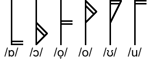

УНИВЕРСАЛЬНЫЙ СВОЙСТВЕННЫЙ АЛФАВИТ v.1
ОПИСАНИЕ
Это экспериментальная письменность, вдохновлённая Международным Фонетическим Алфавитом, Хангылем и Oa Артифексиана.
У неё нет применения в реальности, но, на мой взгляд, ей довольно легко научиться, и её можно применять к практически любому языку.
Она пишется слева направо, сверху вниз.
Она пишется так, как произносится, так что слово, например, "солнце" будет написано пятью символами, а не шестью.
Все гласные пишутся в форме 2*1 и имеют вертикальную черту, в то время как все согласные имеют форму 1*2 и горизонтальную черту.
СОГЛАСНЫЕ
Начертание каждой согласной зависит от его места образования, способа образования, звонкости, а в русском - ещё и мягкости.
МЕСТО ОБРАЗОВАНИЯ
Места образования таковы: билабиальные (губные), лабидентальные (губно-зубные), дентальные (зубные), альвеолярные, ретрофлексные, палатальные (нёбные), велярные (задненёбные), увулярные (язычковые), фарингальные, эпиглоттальные (надгортанные), глоттальные (гортанные). Каждое из них показано своей особой чертой под горизонтальной линией.

Черты подобраны так, чтобы визуализировать места образования. Крайняя левая вертикальная черта символизирует губы/зубы, черта посередине - верхнюю часть нёба, а крайняя левая - заднюю часть нёба и горло.
Если поставить эпиглоттальные после палатальных, вся последовательность становится зеркальной, а палатальные окажутся посередине. Что довольно круто.

Лабиовелярные (губо-задненёбные), лабиопалатальные (губо-нёбные) и постальвеолярные (послеальвеолярные) показаны двумя чертами.

Для любого другого вторичного места образования, можно написать половинную черту, соответствующую нужному вторичному месту образования. (Мягкость в русском является нёбным вторичным местом образования.)
Придыхание тоже показано таким образом, соответствует гортанному месту образования.

(Если что, не обращайте пока внимания на черту снизу. Это из-за /k/, а не вторичного места образования. Подробности объяснены ниже.)
СПОСОБ ОБРАЗОВАНИЯ
Каждый способ образования представлен своими особыми модификациями символа.
У носовых есть дополнительная черта сверху, символизирующая поток воздуха, идущий через нос.
У взрывных - черта снизу.
У аффрикат снизу скобкоподобная черта.
Фрикативные (щелевые), вероятно, самое разнообразное место образования, не имеет модификаций, так что в каком-то смысле они идут по умолчанию.
Аппроксиманты заменяют прямые линии мест образования на более плавные. Это символизирует образование бесшумного, плавного звука.
Дрожащие заменяют прямые линии мест образования на пилообразные. Это символизирует вибрацию, которую они создают.

Одноударные выглядят как дрожащие, но они заменяют только верзнюю половину черты. Это символизирует один период вибрации, в отличие от нескольких, как у дрожащих.
Боковые показаны со сплюснутой V-образной формой сверху. Форма V символизирует раздвоенный поток воздуха. Благодаря тому, что она написана сверху, она позволяет изображать боковые щелевые, аффрикаты, аппроксиманты, одноударные и даже дрожащие без лишних заморочек.
ЗВОНКОСТЬ
В большинстве языков есть глухие смычные (то есть взрывные, аффрикаты и щелевые) и звонкие сонорные (то есть аппроксиманты, дрожащие, одноударные и носовые). Поэтому в УСА горизонтальная черта посередине согласной, чтобы сделать звонкий смычный или глухой сонорный.

ДОПОЛНИТЕЛЬНЫЕ ДЕТАЛИ
В то время как УСА не особо предназначен для нелёгочных согласных, его можно модифицировать в будущем чтобы включить абруптивные (эйективные), щёлкающие и имплозивные.
Удвоенные согласные показаны удвоенными чертами места образования. Половинные черты (вторичное место образования или придыхание) не удваиваются. Дабы упростить символы, горизонтальные части черт тоже не удваиваются. (Если у кого-то есть идеи, как рисовать плавные линии красивее, пишите мне.)
Если ваш язык различает палатоальвеолярные и альволопалатальные, а списать палатоальвеолярные в разряд ретрофлексных не выходит, можно изобразить альволопалатальные как мягкие палатоальвеолярные. Честно, я не знаю ни одного языка, который был бы поставлен в такое ужасное положение.

ГЛАСНЫЕ
Гласные характеризуются подъёмом, рядом и огубленностью, а также (в некоторых языках) - длиной.
У каждой гласной есть черта, её расположение определяется подъёмом и рядом.
У верхних (закрытых) гласных эта черта сверху, средних - посередине, а у нижних (открытых) - снизу.

У гласных переднего ряда, черта артикуляции полностью слева от вертикальной линии; заднего ряда - справа. У гласных среднего ряда, черта артикуляции пересекает вертикальную линию.

Если ваш язык различает более трёх подъёмов гласных, можно писать средние-нижние и средне-верхние как две черты (нижняя и средняя, или верхняя и средняя соответственно), концы которых сведены в одну точку, формируя треугольник.

Ненапряжённые гласные пишутся как соответствующие им напряжённые гласные, но с дополнительной чертой, идущей от конца черты артикуляции к середине вертикальной линии.

Огубленные гласные представлены удвоенной чертой артикуляции.

Долгие гласные представлены удвоенной вертикальной линией.

Дифтонги представлены как два гласных символы, соединённых сверху дугой.